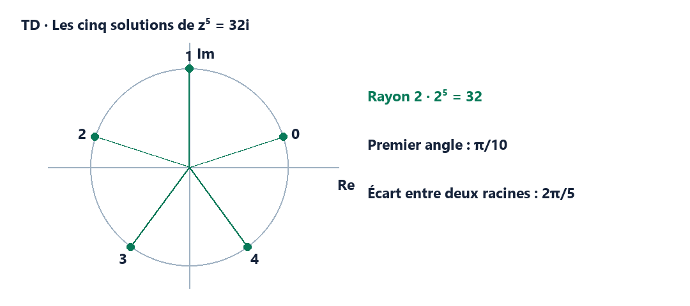

Comprendre le cours
1. Étudier une fonction réelle
Une fonction associe une valeur à chaque entrée de son domaine. Commence par chercher les entrées interdites, par exemple un dénominateur nul ou un logarithme d’un nombre négatif ou nul. Pour vérifier la continuité en un point intérieur, compare les limites venant de gauche et de droite à la valeur au point. Une fonction donnée par morceaux demande souvent un contrôle à la jonction.
Le théorème des valeurs intermédiaires assure l’existence d’un antécédent si la fonction est continue sur l’intervalle et que la valeur recherchée est entre les images des bornes. Pour assurer l’unicité, on peut prouver que la fonction est strictement monotone. Elle est alors bijective de l’intervalle de départ sur son image. Une bijection donne exactement un antécédent pour chaque valeur de l’ensemble d’arrivée choisi.
La dérivée donne la pente locale. Au point d’abscisse a, la tangente a pour équation y=f(a)+f′(a)(x−a). Sur un intervalle, le signe de la dérivée sert à établir le sens de variation. Pour une asymptote oblique, cherche une droite ax+b telle que f(x)−(ax+b) tende vers zéro. Le signe de cette différence indique de quel côté de la droite se trouve la courbe.
2. Manipuler les fonctions usuelles
L’exponentielle est positive, sa dérivée est elle-même et le logarithme naturel en est la réciproque sur les réels positifs. Pour ln(u(x)), commence par imposer u(x)>0. La règle de dérivation d’une composée donne u′(x)/u(x). Pour eu(x), la dérivée vaut u′(x)eu(x).
Sinus et cosinus sont périodiques. Pour définir arcsin ou arccos, on choisit une branche sur laquelle la fonction initiale est bijective. Par exemple arcsin renvoie un angle dans [−π/2,π/2]. Un développement limité conserve les premiers termes au voisinage d’un point. À l’ordre 1 en 0, ex=1+x+o(x). Le reste o(x), divisé par x, tend vers zéro au voisinage de zéro.
3. Représenter un nombre complexe et un signal
Avec i²=−1, l’écriture a+ib repère un point du plan. Le module est sa distance à l’origine √(a²+b²). Un argument est un angle avec l’axe réel positif. Vérifie son quadrant. La forme polaire r eiθ est pratique pour multiplier et élever à une puissance. Les modules se multiplient et les angles s’additionnent.
Le conjugué de a+ib est a−ib. Pour diviser par a+ib, multiplie numérateur et dénominateur par le conjugué. Pour résoudre zⁿ=w avec w≠0, sépare le module et l’angle et prends les n arguments distincts modulo 2π.
En régime sinusoïdal, le complexe associé à A cos(ωt+φ) décrit l’amplitude et la phase. En gardant la convention du cours et la même pulsation, dériver le signal correspond à multiplier sa représentation complexe par iω. Pour un condensateur, l’impédance 1/(iωC) vient de la relation i(t)=C du/dt. Le module du gain et son argument ont alors des rôles différents, l’un sur l’amplitude et l’autre sur le déphasage.
4. Factoriser un polynôme et fractionner une expression
Si P(a)=0, alors x−a est un facteur. Un pôle est ici un zéro du dénominateur réduit qui fait diverger ou singularise l’expression. Simplifie les facteurs communs tout en gardant les restrictions du domaine d’origine. Si le degré du numérateur atteint celui du dénominateur, fais d’abord la division euclidienne pour isoler la partie polynomiale.
Pour un facteur simple x−a, on essaie un terme A/(x−a). Pour une répétition de degré 2, on prévoit aussi B/(x−a)². Pour un facteur du second degré irréductible sur les réels, le numérateur associé peut être affine. Choisis la forme complète, multiplie par le dénominateur commun et retrouve les coefficients en évaluant ou en identifiant les puissances.
Le TD relie aussi la division de polynômes au CRC. Dans ce cadre, les coefficients sont des bits et l’addition comme la soustraction se font par XOR. On effectue la division jusqu’à obtenir un reste de degré inférieur au polynôme générateur.
5. Choisir une méthode d’intégration
Une primitive F de f vérifie F′=f. Sur un intervalle, les primitives diffèrent d’une constante. L’intégrale entre deux bornes vaut F(b)−F(a) quand le théorème s’applique. Elle représente une aire signée. Pour contrôler une primitive, dérive-la.
Quand la fonction contient une composée et la dérivée de son argument, essaye un changement de variable. Pour une intégrale définie, transforme les bornes en même temps que la variable ou reviens à la variable d’origine avant d’appliquer les bornes. Pour un produit, essaye une intégration par parties si dériver un facteur le simplifie et que l’autre possède une primitive connue.
Pour une fraction rationnelle, regarde si tu peux décomposer en éléments simples. Un terme 1/(x−a) conduit à ln|x−a| sur chaque intervalle où le terme existe. Pour des puissances trigonométriques, les formules d’angle double et la linéarisation permettent souvent de revenir à des intégrales de sinus et cosinus simples.
Pourquoi le changement de signe ne prouve-t-il que la moitié du résultat ?
Pour le polynôme du TD, f(2) = −2 et f(3) = 2. La continuité oblige la courbe à passer par la hauteur zéro entre ces deux points. Elle pourrait en général la traverser plusieurs fois.
Pour conclure « exactement une fois », étudie le sens de variation. La dérivée 3x(x−2) est strictement positive entre 2 et 3, donc la courbe monte strictement sur l’intervalle. Existence et unicité reposent ici sur deux arguments que tu peux citer séparément.
TD1, ex. 4 · Montrer qu’une équation a exactement une solution
Du cours aux TD et TP
- TD1 · Prouver l’existence puis l’unicité d’une racine
- TD Fonctions usuelles · Dériver un logarithme composé
- TD Complexes · Résoudre une équation de degré 5 avec les angles
- TD Fractions rationnelles · Décomposer et vérifier le résultat
- TD Intégration · Poser une intégration par parties et calculer les bornes
Questions TD & TP
TD1, ex. 4 · Montrer qu’une équation a exactement une solution
Énoncé. Montrer que x³−3x²+2=0 admet une seule solution sur [2,3].
- Le polynôme est continu. Calcule
f(2)=8−12+2=−2etf(3)=27−27+2=2. Zéro est entre les deux, donc le TVI garantit une solution. - Dérive le polynôme terme par terme.
f′(x)=3x²−6x=3x(x−2). Ce produit vaut zéro en 2 et est strictement positif entre 2 et 3, donc la fonction y est strictement croissante. - Il y a au plus une solution puisque la fonction ne reprend jamais une même valeur sur cet intervalle. La dérivée imprimée dans le corrigé du TD contient une erreur pour cet énoncé. La dérivation terme par terme permet de la repérer.
TD Fonctions usuelles, ex. 3 · Dériver ln|x−1|
Énoncé. Déterminer la dérivée de h(x)=ln|x−1|.
- Le logarithme exige une entrée non nulle après la valeur absolue. Exclue donc
x=1. - Si
x>1, la valeur absolue vautx−1. La dérivée est1/(x−1). Six<1, la valeur absolue vaut1−x. La dérivée est−1/(1−x), ce qui donne la même expression. - Conclusion
h′(x)=1/(x−1)sur le domaine. Vérifie de part et d’autre de 1 que le signe de la dérivée correspond au comportement de la courbe.
TD Complexes, ex. 5 · Résoudre z⁵ = 32i
Énoncé. Déterminer les racines cinquièmes de 32i et les placer dans le plan.
- Écris
32i=32 eiπ/2. Siz=ρ eiθ, la puissance cinquième a pour moduleρ⁵et pour argument5θmodulo2π. - Résous
ρ⁵=32, doncρ=2. Puis5θ=π/2+2kπ, doncθ=π/10+2kπ/5. Prendsk=0,1,2,3,4. - Vérifie une racine directement. Par exemple
z=2icorrespond àk=1et(2i)⁵=32i. Sur le cercle de rayon 2, les racines sont régulièrement espacées.

TD Fractions rationnelles, ex. 2 · Décomposer les pôles simples
Énoncé. Décomposer 1/((x+1)(x+2)) en éléments simples.
- Avec deux facteurs simples, pose
A/(x+1)+B/(x+2). Multiplie l’égalité par(x+1)(x+2). Il reste l’identité1=A(x+2)+B(x+1). - Évalue cette identité polynomiale en
x=−1et trouveA=1. Enx=−2, tu obtiensB=−1. Ces nombres servent dans l’identité polynomiale, alors que la fraction initiale n’est pas définie en ces points. - Le résultat vaut
1/(x+1)−1/(x+2). Mets les termes au même dénominateur pour vérifier. Une primitive sur chaque intervalle autorisé vautln|x+1|−ln|x+2|+C.
TD Intégration par parties, ex. 1 A · Intégrer (t−5)e³ᵗ
Énoncé. Calculer l’intégrale de (t−5)e3t entre 0 et 1.
- Pose
u=t−5car sa dérivée vaut 1. Prendsv=e3t/3comme primitive de l’exponentielle. - Applique
∫uv′=[uv]−∫u′v. Une primitive complète est(t−5)e3t/3−e3t/9 = (3t−16)e3t/9. - Évalue en 1 puis en 0. Le résultat est
(16−13e³)/9. Il est négatif, comme la fonction intégrée sur tout l’intervalle, ce qui donne un contrôle de cohérence.